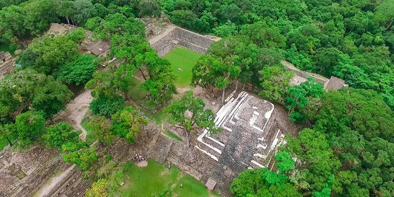
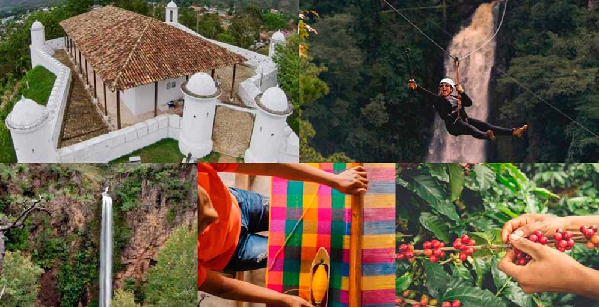
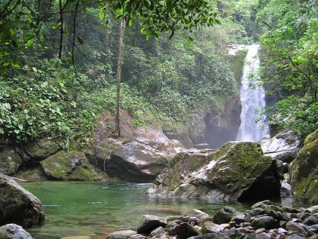
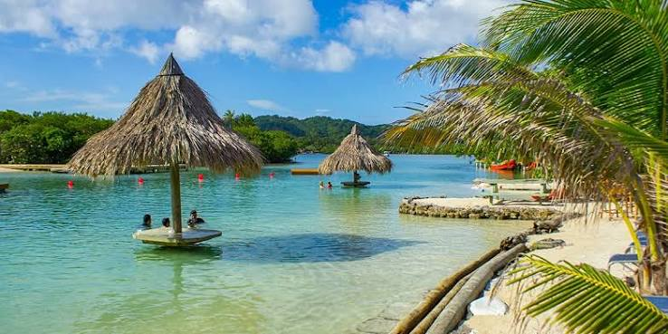

Explora el territorio nacional a través de cuatro circuitos especializados diseñados para conectar al viajero con la naturaleza, la historia y las comunidades locales.

Descripción: Viaje al occidente histórico visitando zonas arqueológicas y valles cafetaleros.
Atractivos: Parque Copán Ruinas, Los Sapos, Sepulturas.
Dificultad de Acceso: Baja / Moderada (carreteras asfaltadas y senderos planos).

Descripción: Recorrido por comunidades serranas con tradiciones vivas, clima fresco y artesanías de barro.
Atractivos: La Esperanza (Intibucá), Gracias (Lempira), iglesias coloniales y aguas termales.
Dificultad de Acceso: Moderada (tramos montañosos).

Descripción: Aventura verde en las cordilleras altas, observación de quetzales y flora endémica.
Atractivos: Parque Nacional Celaque, La Tigra, Cerro Azul Meámbar.
Dificultad de Acceso: Alta (senderismo exigente de montaña).

Descripción: Relajación costera, cultura garífuna viva y el segundo arrecife coralino más grande del mundo.
Atractivos: Roatán, Utila, Cayos Cochinos y Tela.
Dificultad de Acceso: Baja (vuelos nacionales y transporte marítimo disponible).
Estimaciones de trayectos y elevaciones geográficas hacia los principales polos turísticos.
| Destino Turístico | Ruta Geográfica | Altitud Promedio (msnm) | Distancia Vial Est. | Tiempo Promedio de Traslado |
|---|---|---|---|---|
| Copán Ruinas | Ruta Maya | 600 msnm | 385 km | 6 a 7 horas (Carretera CA-4) |
| Gracias, Lempira | Ruta Lenca | 750 msnm | 195 km | 3.5 a 4 horas (Carretera CA-4) |
| Parque Nacional Celaque | Ecoturismo | 1,400 - 2,849 msnm | 200 km | 4 horas |
| Tela / Cayos Cochinos | Caribe y Arrecifes | 3 msnm | 315 km | 4 horas (Carretera CA-5 Norte) |